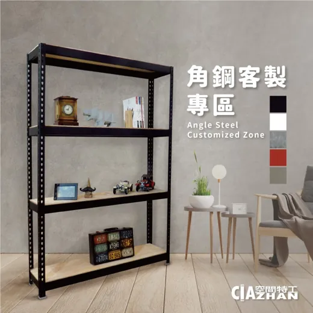
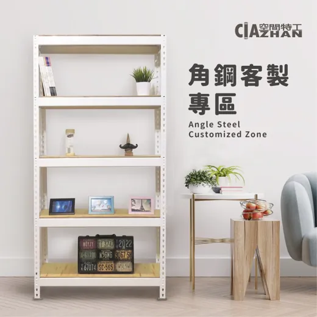
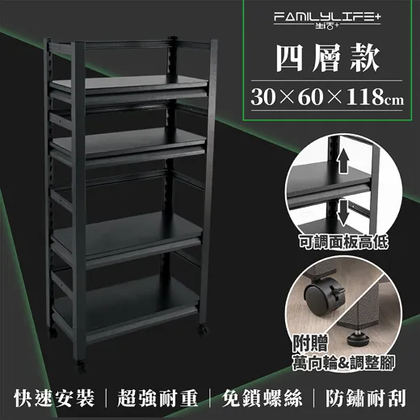
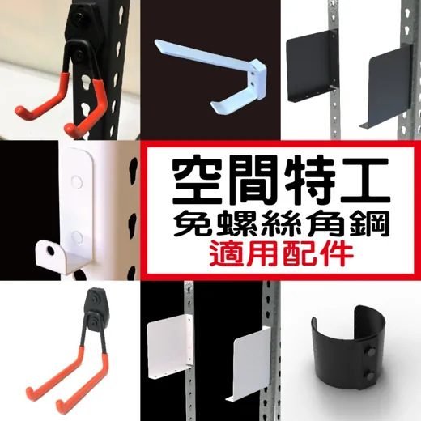
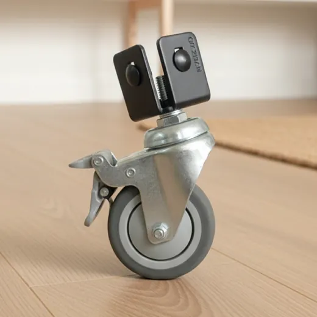
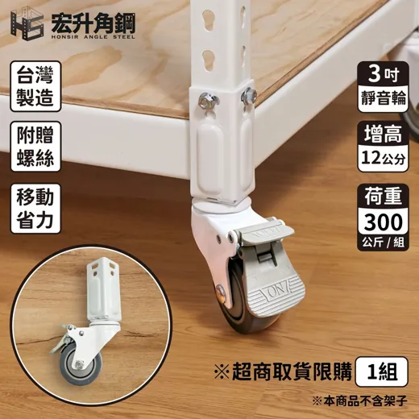
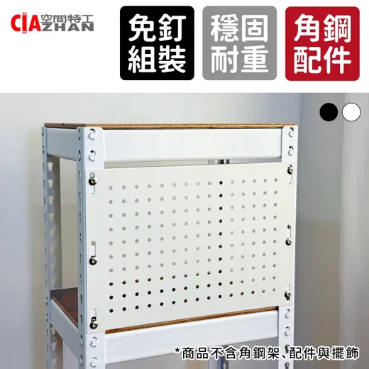
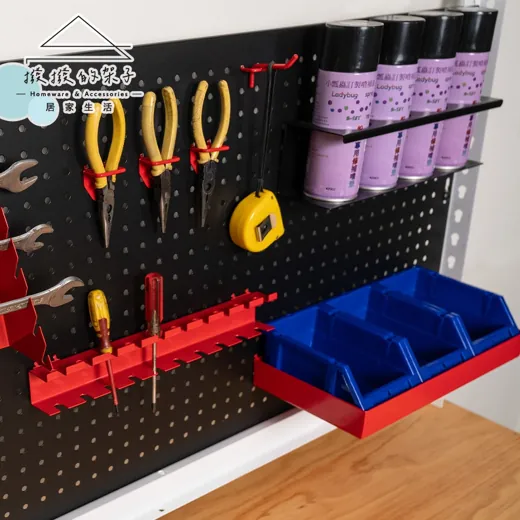
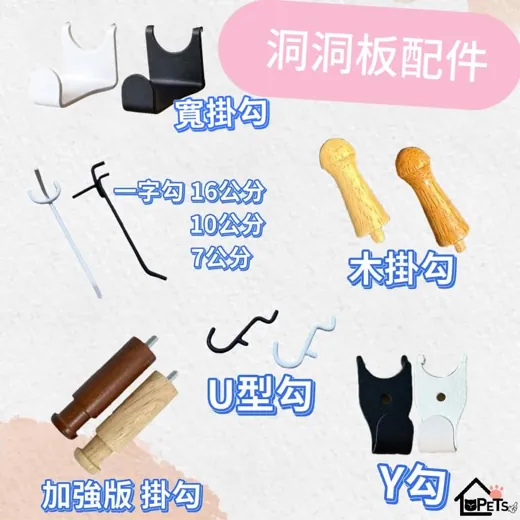

RESOURCE INDEX · 青翎分享
角鋼收納系統採購資源
以「空間特工」角鋼為主軸的採購資源地圖：估價系統、蝦皮活動日折價策略、他牌相容配件（碰世代／撥撥的架子／寵傢好）、活動輪孔位規則、洞洞板 A/B 兩類掛法，以及樹德 MB/OA、無印 PP 抽屜櫃與角鋼呎數的尺寸對照。B+ 區收錄玉青整理的「安寶 vs 空間特工」採購指南（討論稿）。

黑色角鋼層架（客製）

白色角鋼層架（客製）
🏗️ 空間特工⚖️ 安寶 vs 空間特工🛒 蝦皮活動日 N/18/25🔩 他廠相容配件🗄️ 樹德 · 無印對照✅ 連結驗證 2026/08/21
A主力品牌：空間特工
原廠免費工具
24h 估價系統
輸入尺寸與配置即時估價，先在這裡把想要的架子規格算出來，再挑活動日下單。
原廠蝦皮
蝦皮官方賣場
實際下單通路。搭配活動日雙重折價（賣場折價券＋蝦皮折價券）最划算。
💰 下單時機：每月活動日
每月 N 日（與月份同數日，如 8/8、9/9）、18 日、25 日是蝦皮活動日，可同時領賣場折價券＋蝦皮平台折價券疊加使用。估好價先加購物車，等活動日再結帳。
B他牌角鋼比較
下單前可自行搜尋「角鋼」比較其他品牌。青翎點名的替代類型：

他牌PChome 實查 $2,080
岩熔碳鋼角鋼（FL 生活+ FL-264）
快裝式免螺絲設計，立柱自帶裝飾板、中間層板是鋼板，質感較好；但尺寸多為固定規格（此款 30×60×118 cm 四層），彈性不如空間特工可客製。
比較重點
空間特工走「客製尺寸＋配件生態系」路線；岩熔碳鋼這類固定規格品勝在外觀與快裝，但後續擴充（洞洞板、活動輪、抽屜櫃）的相容彈性較差。要長期擴充的收納牆，先確認孔位系統再選邊。另一個正面對決的品牌是
安寶角鋼——完整評比與詢價 checklist 見下方
B+ 區。
B+玉青的角鋼採購指南（討論稿）
玉青整理的完整選購邏輯（2026/08/21）：核心需求、安寶 vs 空間特工評比、統一規格比價底稿與詢價 checklist，本區忠實收錄。原稿中的活動輪孔位、洞洞板 A/B 類與抽屜尺寸對照與本頁 D／E／F 區一致，不重複收錄。家庭內尚有未拍板事項，見下方待討論框。
🗣️ 待討論（尚未拍板，詢價前先喬好）
- 顏色：黑 vs 白 — 原稿統一規格寫「黑色（砂紋／霧面）」，但 TZ 認為白色比較適合家裡。建議詢價時兩色都報：白色烤漆的耐刮、掉漆與髒污顯眼度、加價與交期都可能與黑色不同（黑砂紋通常最不顯刮痕，白色較亮但碰撞掉漆更明顯）。
- 安寶的第三方配件相容性未確認 — 本頁 C／E 區的相容生態（碰世代、撥撥的架子、寵傢好）都是以空間特工孔位為前提；若最後選安寶，洞洞板／活動輪／掛勾的孔位相容性要逐一跟賣家確認。
核心需求（原稿）
| 項目 | 重要性 | 理想條件 |
|---|
| 安裝 | ★★★★★ | 免螺絲，最多只使用橡膠槌 |
| 漆面 | ★★★★★ | 耐刮、不易剝落與掉漆 |
| 層板 | ★★★★★ | 全金屬，排除 MDF／木心板／夾板 |
| 擴充性 | ★★★★★ | 活動輪、洞洞板、掛勾、抽屜可後加 |
| 拆裝 | ★★★★☆ | 層高可調、搬家後可重組 |
| 外觀 | ★★★★☆ | 適合居家，不要過度倉儲感 |
安寶角鋼 vs 空間特工
挑戰者本體品質優先
安寶角鋼
優勢集中在角鋼本體、鋼材與全鋼層板選項，可做黑砂紋、全金屬版本；免螺絲、橡膠槌安裝。官網有 3D 估價系統（可手機 AR 投放到自家空間），雙北新竹免運。第三方配件相容性需進一步確認。
本頁主軸系統性優先
空間特工
最大優勢是配件生態與第三方相容性（活動輪、洞洞板、收納模組），尺寸與層高彈性高。原稿提醒：新品烤漆品質與掉漆處理要特別確認。估價與下單通路見本頁 A 區。
綜合比較（玉青評分，主觀未實測）
| 面向 | 安寶 | 空間特工 |
|---|
| 角鋼本體 | ★★★★★ | ★★★★☆ |
| 漆面信心 | ★★★★½ | ★★★☆☆ |
| 全金屬層板 | ★★★★★ | ★★★★☆ |
| 尺寸客製 | ★★★★★ | ★★★★★ |
| 配件生態 | ★★★½ | ★★★★★ |
| 洞洞板整合 | ★★★½ | ★★★★★ |
| 第三方改裝 | ★★★☆☆ | ★★★★★ |
🧩 系統化思路（原稿核心觀念）
角鋼負責
結構、承重、層高與移動；收納模組（樹德 MB/OA、無印 PP、透明箱）負責
分類；洞洞板負責
垂直空間。越是放在角鋼上的箱子，越不需要為「可堆疊、自帶輪、五向開門」付額外成本——因此 Alison MEGA Box／MAPro 這類 125–135L 前開大箱更適合當
獨立收納櫃（棉被、換季衣物、大型玩具），放進角鋼會重複支付結構成本（
alisonlife.com.tw/megabox）。
統一規格比價底稿（用同規格向兩家報價）
| 規格 | 內容 |
|---|
| 3 呎主力架 | 約 W90 × D45 × H180 cm、5 層、全金屬層板、顏色待定（原稿黑色／TZ 傾向白色） |
| 4 呎大型架 | 約 W120 × D60 × H180 cm、5 層、全金屬層板、顏色同上待定 |
真正總價 ＝ 角鋼 ＋ 5 片鋼板 ＋ 活動輪 ＋ 洞洞板 ＋ 運費。
建議權重（原稿）
| 項目 | 權重 | 項目 | 權重 |
|---|
| 烤漆、防鏽、耐刮 | 20% | 全金屬層板品質 | 15% |
| 結構穩定與耐用 | 15% | 配件／第三方生態 | 15% |
| 尺寸與收納模組相容性 | 10% | 安裝／拆裝便利 | 10% |
| 活動輪 | 5% | 價格 | 5% |
| 售後／保固 | 5% | | |
詢價 Checklist（可直接拿去問客服、比報價）
A. 角鋼本體
- ☐ 立柱／橫桿鋼材與厚度
- ☐ 是否台灣製、鋼材來源
- ☐ 卡榫結構
- ☐ 單層與整座額定荷重
- ☐ 長跨距是否需補強
- ☐ 左右晃動程度
B. 安裝與拆卸
- ☐ 是否免螺絲、只需橡膠槌
- ☐ 一人能否完成
- ☐ 安裝時是否容易刮漆
- ☐ 重複拆裝後是否會鬆
- ☐ 搬家後能否重組
C. 烤漆、防鏽、耐刮
- ☐ 粉體烤漆製程
- ☐ 鹽霧／防鏽測試
- ☐ 孔位與卡榫處是否掉漆
- ☐ 拆卸後是否大片剝漆
- ☐ 新品刮傷可否換貨
- ☐ 黑色是否砂紋／霧面；白色烤漆表現
D. 全金屬層板
- ☐ 是否真正 100% 金屬
- ☐ 板厚與補強方式
- ☐ 單片承重
- ☐ 大尺寸中央是否下凹
- ☐ 邊緣是否折邊防割手
- ☐ 未來可否單片追加購買
E. 活動輪與洞洞板
- ☐ 原廠輪幾吋、佔第幾孔
- ☐ 第三方 4 吋輪能否直上
- ☐ 用第三方輪是否影響保固
- ☐ 原廠金屬洞洞板尺寸
- ☐ 撥撥／碰世代是否相容
- ☐ 洞洞板能否裝側面與背面
決策順序（原稿）
- 先確認家中每個位置的寬 × 深 × 高。
- 決定要放的收納模組：樹德、MUJI、一般 PP 箱、MEGA Box。
- 反推最合適的 2／3／4／4.5 呎角鋼。
- 用完全相同規格向安寶與空間特工報價。
- 最後才比較活動輪、洞洞板與第三方配件。
原稿結論
系統性、擴充性與第三方配件第一優先 → 偏空間特工；漆面與全鋼層板品質第一優先 → 把安寶拉進最後決選。顏色（黑／白）與安寶配件相容性喬定前，先別下單。
C角鋼配件
原廠蝦皮
空間特工原廠配件專區
原廠配件收藏頁，孔位保證相容。

他廠相容商品頁需真人瀏覽器
碰世代 相容配件
他廠出的角鋼相容配件，價格常比原廠便宜，孔位相容空間特工。
D活動輪
| 來源 | 規格 | 孔位影響 | 連結 |
|---|
| 原廠 |
 三吋 |
佔用底部第一孔 |
蝦皮商品頁 |
| 他廠 |
 四吋 |
鎖孔在第三孔。搭 8–9 mm 木板時，橫桿可裝第一、二孔；若用 18 mm 木板，橫桿只能從第四、五孔開始裝 |
蝦皮商品頁 |
⚠️ 先想好底層配置再選輪
輪子吃掉的底部孔位會直接限制最底層層板／橫桿的安裝高度，尤其搭配厚木板（18 mm）時，四吋輪方案的底層會被墊高。估價前先確定「要不要輪子＋層板厚度」。
E洞洞板
A 類：可直接掛角鋼孔位

原廠商品頁需真人瀏覽器
空間特工 金屬洞洞板
原廠金屬洞洞板，直接掛角鋼孔位。

他廠商品頁需真人瀏覽器
撥撥的架子 金屬洞洞板
他廠金屬洞洞板，可掛角鋼孔位。
他廠商品頁需真人瀏覽器
碰世代 木質洞洞板
木質質感版本，可掛角鋼孔位。兩款規格（款式二為客製化賣場，圖右）：
B 類：需用束線帶固定

他廠蝦皮
寵傢好 木質洞洞板
↑ 圖為該賣場的洞洞板專用勾（collection 內商品多為寵物用途頁面，板材本體請入賣場選購）
須用束線帶固定於角鋼。90 cm 可單買木板搭 3 呎角鋼；60 cm 可配 2 呎角鋼，但 60 能不能單買木板要先問賣家。
📌 相容性註記（青翎）
碰世代與寵傢好的洞洞板孔位相容；碰世代預設板材厚度薄一點，但兩家配件大致相容。其他品牌的洞洞板配件則不一定相容，混搭前先確認孔徑與孔距。
F抽屜櫃 × 角鋼呎數對照
把市售抽屜櫃塞進角鋼層架的尺寸公式（櫃寬組合 → 適用角鋼呎數）：
🧮 寬度換算備忘
55 = 27 + 27 = 18 + 18 + 18 — 樹德 MB 系列的寬度模組可互換拼組，同一格 55 cm 的空間可以放一個 55、兩個 27 或三個 18 寬的櫃子。
G來源與驗證聲明
- 本頁內容為青翎分享的採購筆記之忠實整理（2026/08/21），孔位規則、尺寸對照與相容性註記皆照原文保留，未另行實測。
- 全部連結於 2026/08/21 逐一 curl 驗證：估價系統、蝦皮賣場／collection 頁、寵傢好、樹德 MB/OA、無印良品皆回 200 存活。
- 蝦皮商品深連結（7 條）curl 回 403 — 蝦皮反爬蟲擋自動抓取，真人瀏覽器可正常開啟，連結照樣保留。
- PChome 岩熔碳鋼架經 PChome 搜尋 API 實查：FL 生活+ FL-264（30×60×118 cm 四層），售價 NT$2,080（2026/08/21 快照，購買前以商品頁即時價為準）。
- 「每月活動日 N 日」指蝦皮每月與月份同數的大促日（如 8/8、9/9），為對原文「N」的合理解讀；實際檔期以蝦皮公告為準。
- B+ 區為玉青整理的「角鋼 × 收納系統比較指南」（2026/08/21）之忠實收錄：星等評分與權重為整理者主觀評估、未經實測；顏色（黑／白）等未拍板事項標示於該區待討論框。
- 安寶角鋼官網／3D 估價系統、Alison MEGA Box 連結於 2026/08/21 curl 驗證存活（HTTP 200）。
- 商品主圖（14 張）於 2026/08/21 以登入版瀏覽器自各商品頁抓取後轉存本站（webp 縮圖），非即時同步——商品改版後圖可能過時，點連結以商品頁現況為準。宏升四吋輪、寵傢好掛勾等他廠圖為該賣場官方商品圖。